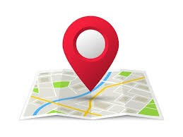

Serviços
Nosso portal oferece ferramentas e informações para facilitar a vida de quem precisa de acessibilidade:

Mapa Interativo: Localize lugares adaptados para cadeirantes, idosos e pessoas com mobilidade reduzida.

Avaliações de Usuários: Leia comentários e avaliações de outros visitantes sobre a acessibilidade de cada local.

Suporte Multilíngue: Informações e traduções para estrangeiros em diversos idiomas.

Alertas e Dicas: Receba notificações sobre alterações ou melhorias na acessibilidade de locais públicos.